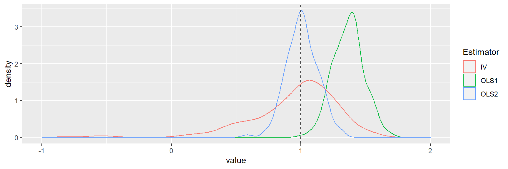

Como uma segunda fase do tutorial de Inferência Causal escrito aqui no site, continuo explicando o papel das variáveis instrumentais dentro dela.
Este tutorial busca aplicar alguns dos conceitos de inferência causal em problemas econômicos reais e simulados, utilizando o software R, demonstrando e apresentando suas enormes vantagens em relação ao data science, machine learning e até mesmo o deep learning.
Como a Economia trata de buscar respostas para problemas mais complexos (e interessantes), vamos “muito além do simples ajuste de curvas” (parafraseando o prof. Josh Angrist aqui)
Palavras-chave: Inferência Causal, Diff and Diff, Econometria
Antes de começar a ler este artigo, comece assistindo o prof. Angrist explicando a diferença da Econometria para o Data Science e por qual motivo a Econometria trata de resolver problemas mais complexos e difíceis do que o DS.
“É somente através da econometria, a ciência de dados original, que você pode conhecer o caminho da causa ao efeito.” (Angrist, 2008)
Se \(y = β_0 + β_1x + e\) e \(cov (x, e) = 0\), então uma regressão de \(y\) em \(x\) não nos dará uma estimativa não enviesada de \(β_1\).
Porém, se houver uma variável \(z\) que afeta \(x\), de forma que \(cov (z, x) = 0\) e \(cov (z, e) = 0\), então podemos usar \(z\) como uma variável instrumental. \(β_1 = cov (z, y) / cov (z, x)\) no caso simples acima.
Simulamos dados onde:
U → X, U → Y; IV é necessário se U for uma variável não observável.
X → Y
Z → X
O tamanho da amostra e a força do efeito de Z em X desempenham um papel fundamental na IV.
Geramos os dados (nota \(β_X = 1\)):
library(tidyverse)
library(AER)
sample_size = 300
coef_Z = 0.9
viol = 0
Z <- runif(sample_size,
min = 1, max = 5)
U <- runif(sample_size,
min = 1, max = 5) + viol*Z
X <- U + rnorm(sample_size) + coef_Z *Z
Y <- U + X + rnorm(sample_size)mod1OLS <- lm(Y ~ X)
mod2OLS <- lm(Y ~ X + U)
Tabela 1: Resultados via MQO de Y (verdadeiro efeito de X é 1)
| Dependent variable: | ||
| Y | ||
| mod1OLS | mod2OLS | |
| (1) | (2) | |
| Constant | 0.834*** | 0.112 |
| (0.244) | (0.179) | |
| X | 1.386*** | 0.958*** |
| (0.040) | (0.038) | |
| U | 1.051*** | |
| (0.062) | ||
| Observations | 300 | 300 |
| R2 | 0.800 | 0.899 |
| Adjusted R2 | 0.799 | 0.898 |
| Residual Std. Error | 1.367 (df = 298) | 0.974 (df = 297) |
| F Statistic | 1,191.295*** (df = 1; 298) | 1,317.727*** (df = 2; 297) |
| Note: | p<0.1; p<0.05; p<0.01 | |
A Tabela 1 acima, mostra que no Modelo 1, com U não observado, obtemos um viés, estatisticamente significativo, na estimativa de \(β_X\). Se observamos U, então controlando para isso dá um estimativa não enviesada de \(β_X\) (Modelo 2). Agora usamos regressão de variáveis instrumentais.
library(AER)
ModIV <- ivreg(Y ~ X | Z)
Tabela 2: Resultados IV (instrumental var.) para Y (verdadeiro efeito de X é 1)
| Dependent variable: | |
| Y | |
| ModIV | |
| Constant | 2.713*** |
| (0.431) | |
| X | 1.059*** |
| (0.073) | |
| Observations | 300 |
| R2 | 0.755 |
| Adjusted R2 | 0.755 |
| Residual Std. Error | 1.511 (df = 298) |
| Note: | p<0.1; p<0.05; p<0.01 |
A Tabela 2 mostra que a regressão da variável instrumental (IV) nos dá uma visão imparcial da estimativa de \(β_X\).
Agora criamos uma função para realizar simulações IV.
IVsamD <- function(sample_size,
coef_Z,viol = 0) {
num_loops = 300
OLS1 <- numeric(num_loops)
OLS2 <- numeric(num_loops)
IV <- numeric(num_loops)
for (i in 1: num_loops) {
U <- runif(sample_size,
min = 1, max = 5)
Uy <- rnorm(sample_size)
Z <- runif(sample_size,
min = 1, max = 5) + viol*Uy
X <- U + rnorm(sample_size) + coef_Z *Z
Y <- U + X + Uy
OLS1[i] <- summary(lm(Y ~ X))$coef[2]
OLS2[i] <- summary(lm(Y ~ X + U))$coef[2]
IV[i] <- summary(ivreg(Y ~ X | Z))$coef[2]
}
reg_IV <- tibble(OLS1,OLS2,IV)
reg_IV
library(tidyr)
reg_IV_s <- reg_IV %>%
gather(Estimator,value,OLS1:IV)
reg_IV_s
library(ggplot2)
ggplot(reg_IV_s, aes(value, colour = Estimator)) +
geom_density() +
xlim(c(-1,2)) +
geom_vline(xintercept = 1, lty = 2)
}Agora usamos a função IV.
IVsamD(sample_size = 30,
coef_Z = 1, viol = 0)
A distribuição de amostragem IV tem maior propagação, embora consistente
Copie o código para a função de simulação IV. Tente os seguintes cenários (eles são escritos como comentários de código R; você tem que remover o hash):
A política pública freqüentemente visa reduzir o tabagismo devido aos seus efeitos na saúde. Se impostos são usados para restringir o fumo, surge a pergunta - como o consumo será afetado?
Este exemplo é de Stock e Watson (2011). Vamos trabalhar com dados sobre cigarros no pacote AER e renomear para conveniência. Os dados são para os estados dos EUA, para os anos de 1985 e 1995.
library(AER)
data("CigarettesSW", package = "AER")
# renomeamos o dataset
Cig <- CigarettesSWTemos dados sobre as vendas anuais per capita de cigarros em maços, maços e preços, preço, e o índice de preços ao consumidor, cpi.
library(ggplot2)
ggplot(Cig, aes(x=log(packs), y=log(price/cpi))) +
geom_point() +
stat_smooth(method = "lm")## `geom_smooth()` using formula 'y ~ x'Estaremos removendo efeitos fixos por diferenciação e usaremos instrumentos estimativa de variáveis nos dados diferenciados.
Criamos novas variáveis com a função mutate. Abaixo, convertemos nosso preço, renda e variáveis fiscais em termos reais.
Cig <-Cig %>%
mutate(rprice = price/cpi)
Cig <-Cig %>%
mutate(rincome = income/population/cpi)
Cig <-Cig %>%
mutate(rtaxs=(taxs-tax)/cpi)
Cig <-Cig %>%
mutate(rtax=tax/cpi)Criamos datasets separados para os anos de 1985 e 1995 com o filtro de dados do R.
Cig85 <- Cig %>%
filter(year==1985)
Cig95 <- Cig %>%
filter(year==1995)A função transmute funciona como a mutate, mas não acrescenta aos outros dados. Nós retiramos variáveis para 1985 e 1995, e então calculamos a diferença.
pack_85 <- Cig85 %>%
transmute(pack_85 = log(packs))
pack_95 <- Cig95 %>%
transmute(pack_95=log(packs))
# Diferenca de 1995 e 1985
pack_diff <- pack_95$pack_95 - pack_85$pack_85Na última linha, pegamos uma diferença de longo prazo no número de maços de cigarro entre 1995 e 1985; estaremos estudando a elasticidade de longo prazo. Fazemos cálculos de preço:
rprice85 <-Cig85 %>%
transmute(rprice85 = log(rprice))
rprice95 <-Cig95 %>%
transmute(rprice95 = log(rprice))
rpricediff <- rprice95$rprice95 -rprice85$rprice85Para renda e impostos
i85 <-Cig85 %>%
transmute(i85 = log(rincome))
i95 <-Cig95 %>%
transmute(i95 = log(rincome))
idiff <- i95$i95 - i85$i85
ts85 <-Cig85 %>%
transmute(ts85 = rtaxs)
ts95 <-Cig95 %>%
transmute(ts95 = rtaxs)
tsdiff <- ts95$ts95 - ts85$ts85
t85 <-Cig85 %>%
transmute(t85 = rtax)
t95 <-Cig95 %>%
transmute(t95 = rtax)
tdiff <- t95$t95 - t85$t85A variável dependente é a quantidade de cigarros, que é regredida no preço (endógena) e renda (exógena); o instrumento são os impostos gerais sobre vendas. Todas as variáveis são diferenças entre 1995 e 1985.
library(estimatr)
hc1 <- function(x) vcovHC(x, type = "HC1")
mod1 <- iv_robust(pack_diff ~ rpricediff +idiff| idiff + tsdiff,diagnostics = TRUE)
mod2 <- iv_robust(pack_diff ~ rpricediff +idiff| idiff + tdiff)
mod3 <- iv_robust(pack_diff ~ rpricediff +idiff| idiff + tsdiff+ tdiff, diagnostics = TRUE)# Resultados das regressoes via VI
summary(mod1)##
## Call:
## iv_robust(formula = pack_diff ~ rpricediff + idiff | idiff +
## tsdiff, diagnostics = TRUE)
##
## Standard error type: HC2
##
## Coefficients:
## Estimate Std. Error t value Pr(>|t|) CI Lower CI Upper DF
## (Intercept) -0.118 0.07007 -1.683 9.923e-02 -0.2591 0.02318 45
## rpricediff -0.938 0.21356 -4.392 6.739e-05 -1.3681 -0.50788 45
## idiff 0.526 0.35001 1.503 1.399e-01 -0.1790 1.23093 45
##
## Multiple R-squared: 0.5499 , Adjusted R-squared: 0.5299
## F-statistic: 11.59 on 2 and 45 DF, p-value: 8.73e-05
##
## Diagnostics:
## numdf dendf value p.value
## Weak instruments 1 45 32.015 1e-06 ***
## Wu-Hausman 1 44 0.534 0.469
## Overidentifying 0 NA NA NA
## ---
## Signif. codes: 0 '***' 0.001 '**' 0.01 '*' 0.05 '.' 0.1 ' ' 1summary(mod2)##
## Call:
## iv_robust(formula = pack_diff ~ rpricediff + idiff | idiff +
## tdiff)
##
## Standard error type: HC2
##
## Coefficients:
## Estimate Std. Error t value Pr(>|t|) CI Lower CI Upper DF
## (Intercept) -0.01705 0.07097 -0.2402 8.112e-01 -0.1600 0.1259 45
## rpricediff -1.34251 0.24565 -5.4652 1.928e-06 -1.8373 -0.8478 45
## idiff 0.42815 0.30800 1.3901 1.713e-01 -0.1922 1.0485 45
##
## Multiple R-squared: 0.5197 , Adjusted R-squared: 0.4983
## F-statistic: 18.04 on 2 and 45 DF, p-value: 1.768e-06summary(mod3)##
## Call:
## iv_robust(formula = pack_diff ~ rpricediff + idiff | idiff +
## tsdiff + tdiff, diagnostics = TRUE)
##
## Standard error type: HC2
##
## Coefficients:
## Estimate Std. Error t value Pr(>|t|) CI Lower CI Upper DF
## (Intercept) -0.052 0.06511 -0.7987 4.287e-01 -0.1831 0.07914 45
## rpricediff -1.202 0.20850 -5.7669 6.919e-07 -1.6223 -0.78246 45
## idiff 0.462 0.31855 1.4504 1.539e-01 -0.1796 1.10362 45
##
## Multiple R-squared: 0.5466 , Adjusted R-squared: 0.5264
## F-statistic: 19.12 on 2 and 45 DF, p-value: 9.792e-07
##
## Diagnostics:
## numdf dendf value p.value
## Weak instruments 2 44 86.395 5.8e-16 ***
## Wu-Hausman 1 44 5.505 0.0235 *
## Overidentifying 1 NA 4.085 0.0433 *
## ---
## Signif. codes: 0 '***' 0.001 '**' 0.01 '*' 0.05 '.' 0.1 ' ' 1As estimativas das VIs acima são apresentadas completamente pelo summary() do R. Conduzimos o teste de superidentificação para validade de instrumentos; no modelo 3, temos dois instrumentos.
A hipótese nula de que ambos os instrumentos são exógenos é rejeitada no nível de 5%. Stock e Watson (2011, p. 448) defendem o Modelo 1. Eles argumentam:
“Nós achamos que o caso para a exogeneidade do imposto geral sobre vendas é mais forte do que para o imposto específico do cigarro, porque o processo político pode vincular mudanças no imposto específico sobre o cigarro às mudanças no mercado de cigarros e na política de tabagismo”.
A estatística F para o Modelo 1 está boa.
A elasticidade de longo prazo é de cerca de -0,9, o que é um tanto elástica.
Para entender os experimentos e a abordagem de resultados potenciais, Rosenbaum (2017), para compreensão de gráficos causais, Pearl et al. (2016), para avaliação do programa, Josselin e Le Maux (2017), para métodos econométricos para inferência causal explicado com muito humor, Angrist e Pischke (2015). Para ir mais longe Morgan e Winship (2014), Abadie e Catteneo (2018), Manski e Pepper (2018).
Abadie,A., andM.D. Catteneo. 2018. _Econometric methods for program evaluation._ Annual Review of Economics 10: 465–503.
Angrist, J.D., J. Pischke. 2015. Mastering ‘metrics - The path from cause to effect. Princeton: Princeton University Press.
Josselin, J.-M., and B. Le Maux. 2017. _Statistical tools for program evaluation: Methods and applications to economic policy, public health, and education._ Berlin: Springer.
Manski, C.F., and J.V. Pepper. 2018. _How do right-to-carry laws affect crime rates? Coping with ambiguity using bounded variation assumptions._ Review of Economics and Statistics 100 (2): 232–244.
Morgan, S.L., and C.Winship. 2014. _Counterfactuals and causal inference: Methods and principles for social research_ (Analytical methods for social research). Cambridge: Cambridge University Press.
Pearl, J., M. Glymour, and N.P. Jewell. 2016. _Causal inference in statistics: A primer._ New York: Wiley.
Rosenbaum, P. 2017. _Observation and experiment - An introduction to causal inference._ London: Harvard University Press.
Stock, J.H., and M.W. Watson. 2011. _Introduction to econometrics._ Boston: Addison-Wesley.